Key Takeaways
- Controls whether links in Event Viewer can be clicked.
- Microsoft events can show a “More Information” link.
- If enabled, links and “More Information” are hidden.
- If disabled or not configured, users can open the links for more details.
Hey, let’s discuss about Configure Event Viewer Hyperlink Restrictions using Intune. This policy controls whether hyperlinks in the Event Viewer are active. Normally, Event Viewer turns web addresses (HTTP/HTTPS URLs) into clickable links and displays a “More Information” link for events created by Microsoft components. Clicking this link can open a webpage with additional details about the event.
Table of Contents
Configure Event Viewer Hyperlink Restrictions using Intune
If this policy is enabled, hyperlinks in event descriptions are disabled and the “More Information” link is hidden. If the policy is disabled or not configured, users can click these links, and Event Viewer may send event information to Microsoft to provide more details about the event.
How to Create a Policy in Intune
Sign in to the Microsoft Intune Admin Center using your admin account. From the left menu, go to Devices and then select Configuration profiles. Click on Create profile to start a new policy.

Create a Profile
Choose Windows 10 and later as the platform. Select Settings catalog as the profile type. Finally, click the Create option to continue.
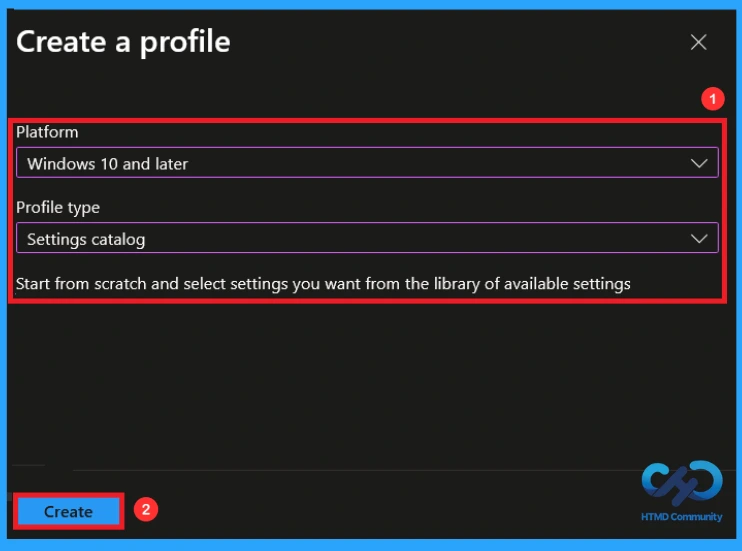
Basic Tab for Name and Description
The Basics tab is the quickest step. Here, you need to enter the basic details such as the Name, Description, and Platform information. Since the platform is already set to Windows, you only need to provide a specific name and description for the policy, then click Next.
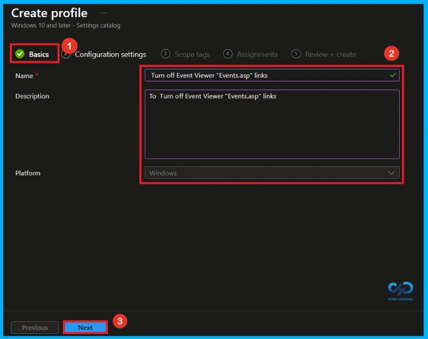
Configuration Settings
The next step is Configuration settings; there, you can look for the + Add Settings. When you click on the + Add settings, you will get the settings picker window. There, you can search Event Viewer or select the category Administrative Templates\System\Internet Communication Management\Internet Communication settings. select the policy name Turn off Event Viewer “Events.asp” links.
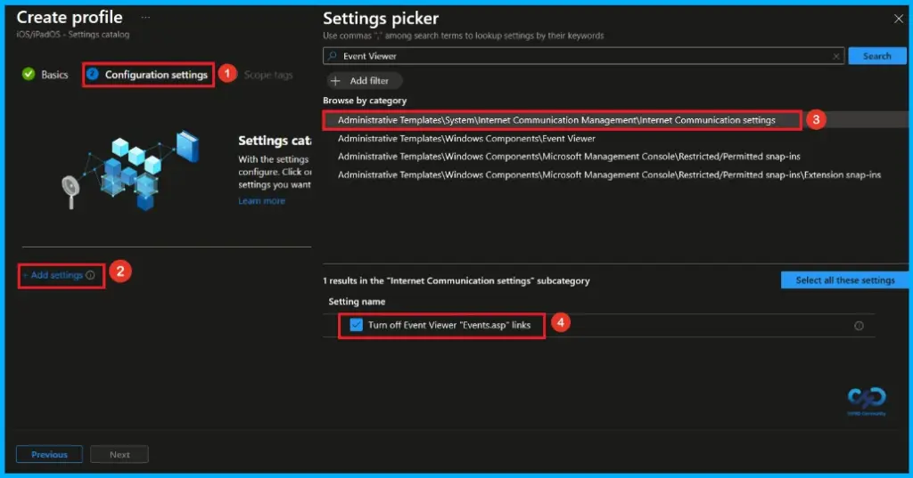
Disable this Policy
After closing the Settings Picker, you will see it on the Configuration Settings page. Here we have only two settings: Enable or Disable. By default, Turn off Event Viewer “Events.asp” links will be disabled. Click Next to continue.
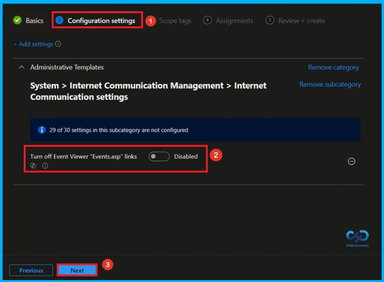
Enable this Policy
Here, you can enable or configure this policy, you can enable the Event Viewer “Events.asp” links by toggling the switch from left to right. Then, you can click the Next button to continue.
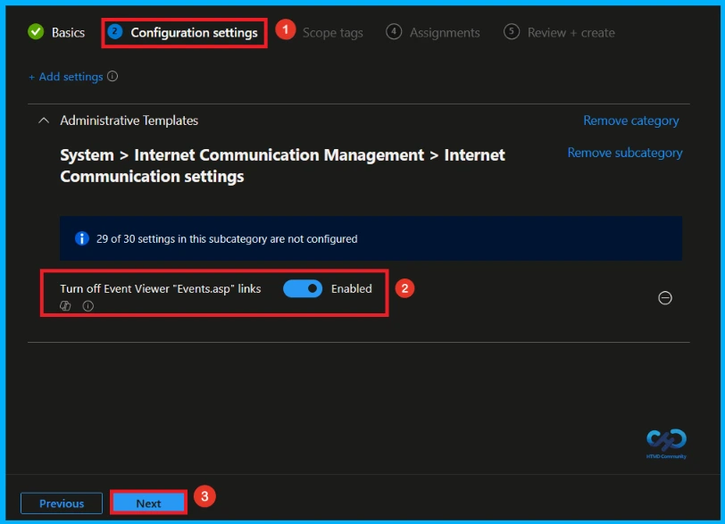
What is Scope Tag
The next section is the Scope tag and which is not a compulsory step. It helps to assign this policy to a defined group of users or devices. Here, I skip the section(not mandatory) and click on the next button.

Assignments Tab to Assign Group
The assignments tab is the crucial step that determines which groups can be selected to assign the policy. Click on the +Add groups option under included groups. Select the group(HTMD Test Policy) from the list of groups on your tenant. And you can see the selected group on the Assignments tab. Click Next to continue.

Review + Create Tab
Before completing the policy creation, you can review each tab to avoid misconfiguration or policy failure. After verifying all the details, click on the Create Button. After creating the policy, you will get a success message like “Turn off Event Viewer “Events.asp” links created successfully.
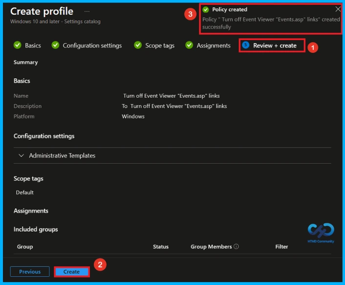
Device and User Check-in Status
To view a policy status, go to the Devices > Configuration in the Intune portal, select the policy (Turn off Event Viewer “Events.asp” links). Check whether the status has shown succeeded (1). Use manual sync in the Company Portal to speed up the process.
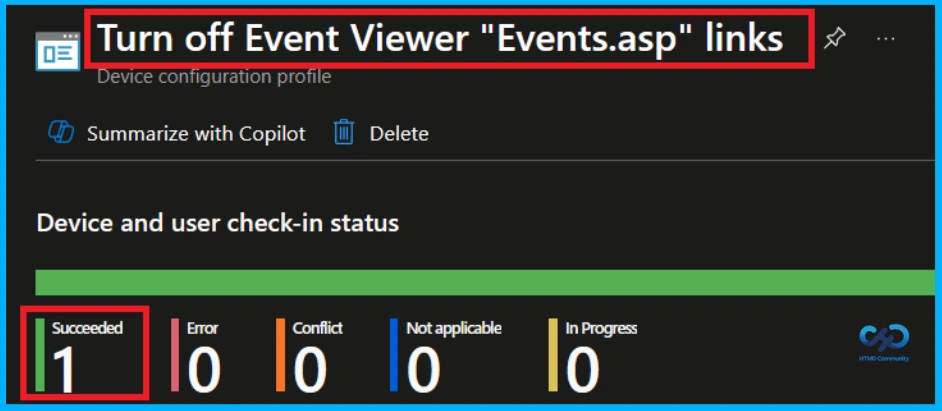
Client side Verification
To confirm if a policy has been applied, use the Event Viewer on the client device. Go to Applications and Services Logs > Microsoft > Windows > Device Management > Enterprise Diagnostic Provider > Admin. From the list of policies, use the Filter Current Log option and search for Intune event 814.
MDM PolicyManager: Set policy strinq, Policy: (EventViewer_DisableLinks), Area: (ADMX_ICM),
EnrollmentID requesting merqe: (EB427D85-802F-46D9-A3E2-D5B414587F63), Current User:
(Device), String: (), Enrollment Type: (0x6), Scope: (0x0).
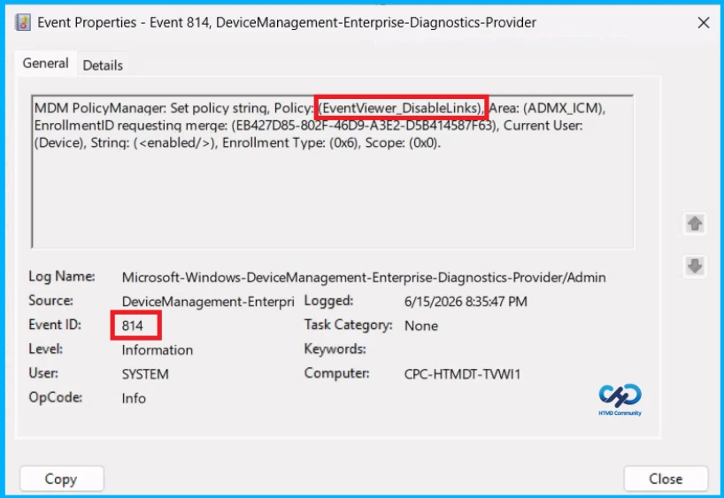
Windows Configuration Service Provider (CSP)
The Policy Configuration Service Provider (CSP) is a feature used by organisations to manage and control settings on Windows 10 and 11 devices. it explains the Description Framework Properties and ADMX mapping.
Description Framework Properties:
- Format –
chr(string) - Access Type – Add, Delete, Get, Replace
ADMX mapping:
| Name | Value |
|---|---|
| Name | EventViewer_DisableLinks |
| Friendly Name | Turn off Event Viewer “Events.asp” links |
| Location | Computer Configuration |
| Path | InternetManagement > Internet Communication settings |
| Registry Key Name | Software\Policies\Microsoft\EventViewer |
| Registry Value Name | MicrosoftEventVwrDisableLinks |
| ADMX File Name | ICM.admx |
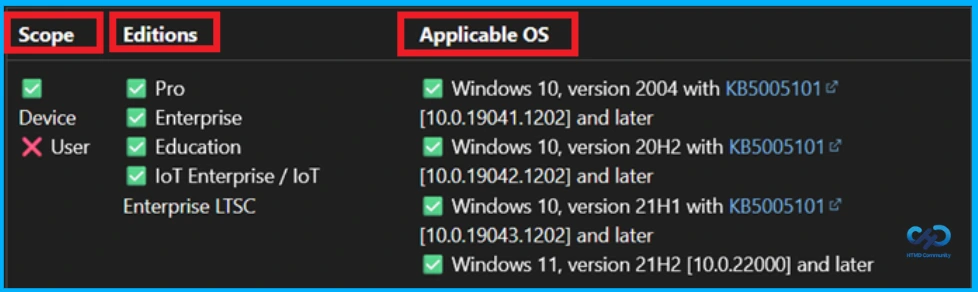
How to Remove Assigned Group from this Policy
If you need to remove a group from a policy assignment for security updates. To do this, open the policy from the Configuration tab and click on the Edit button on the Assignment tab. Click on the Remove button on this section to remove the policy.
For detailed information, you can refer to our previous post – Learn How to Delete or Remove App Assignment from Intune using by Step-by-Step Guide.
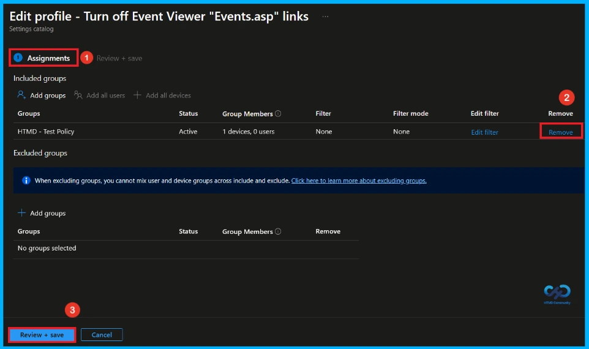
How to Delete this Policy from Intune
Admins may delete policies in Intune due to different reasons. If you want to quickly delete a Policy, Intune helps you to do that. To do this, search for this policy on the Intune admin center. Click on the 3-dot option and then click on the Delete button.
For detailed information, you can refer to our previous post – How to Delete Allow Clipboard History Policy in Intune Step by Step Guide.
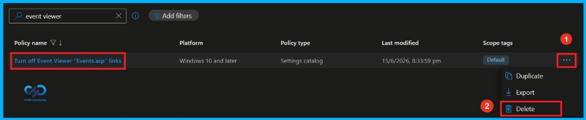
Need Further Assistance or Have Technical Questions?
Join the LinkedIn Page and Telegram group to get the latest step-by-step guides and news updates. Join our Meetup Page to participate in User group meetings. Also, Join the WhatsApp Community and WhatsApp Channel to get the latest news on Microsoft Technologies. We are there on Reddit as well.
Author
Anoop C Nair has been Microsoft MVP from 2015 onwards for 10 consecutive years! He is a Workplace Solution Architect with more than 22+ years of experience in Workplace technologies. He is also a Blogger, Speaker, and Local User Group Community leader. His primary focus is on Device Management technologies like SCCM and Intune. He writes about technologies like Intune, SCCM, Windows, Cloud PC, Windows, Entra, Microsoft Security, Career, etc